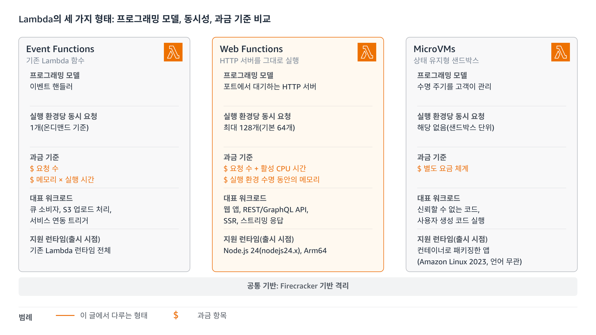
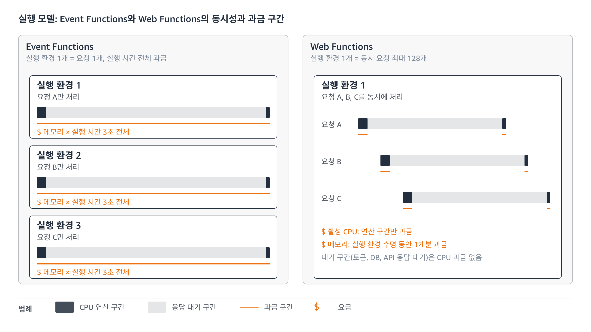
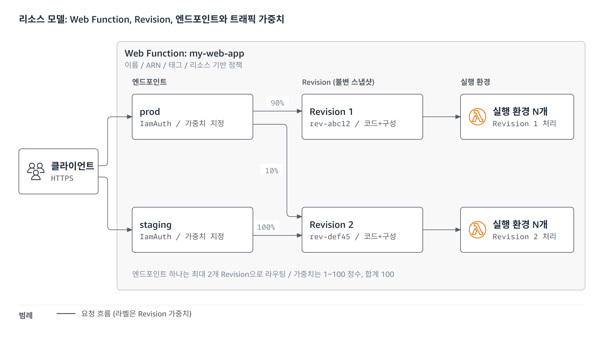
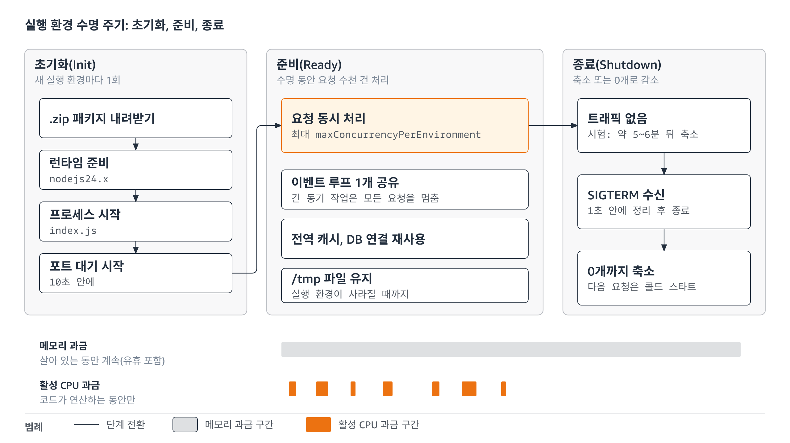
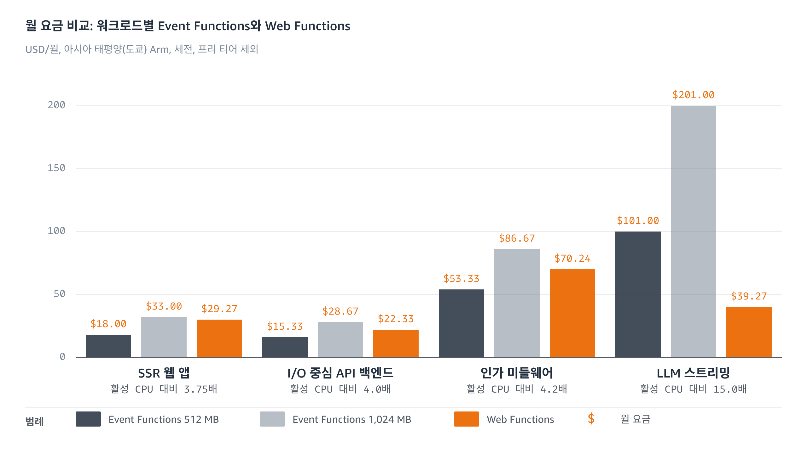
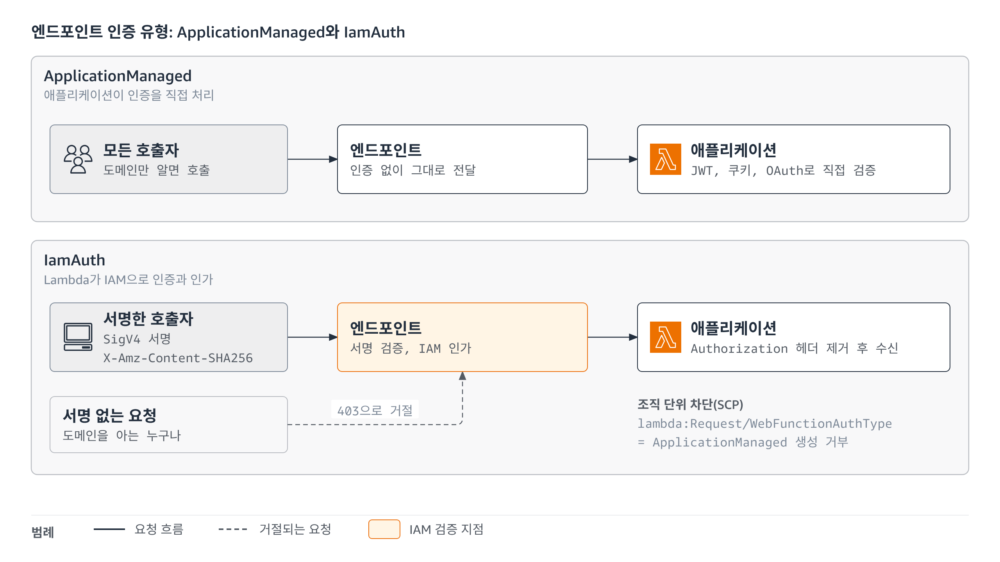
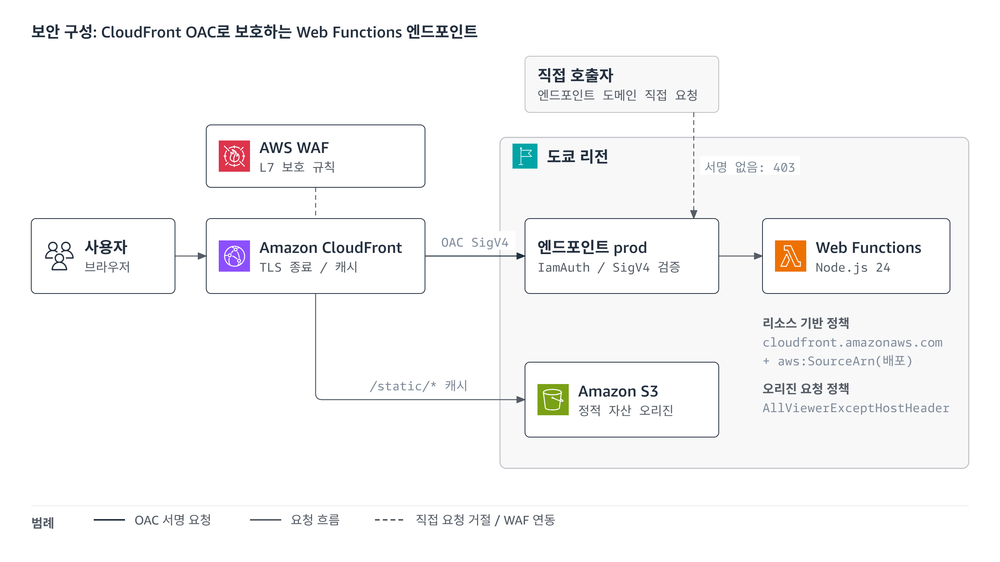

HTTP 서버를 그대로 AWS Lambda에 올리면 무엇이 달라지고 언제 Event Functions보다 저렴해지는지를 정리합니다. Web Functions는 어댑터 없이 서버 코드를 배포하고 실행 환경 하나가 최대 128개 요청을 동시에 처리하며 CPU는 실제 연산 시간만 과금됩니다. 요금 페이지 예시 기준으로 처리 시간이 활성 CPU의 약 5~6배를 넘으면 512 MB Event Functions보다 저렴해지고 짧은 요청을 빠르게 처리하는 API는 Event Functions가 여전히 저렴할 수 있습니다.This post examines what changes when you run an HTTP server as is on AWS Lambda and when it becomes cheaper than Event Functions. With Web Functions, you deploy server code without an adapter, a single execution environment handles up to 128 requests concurrently, and CPU is billed only for actual compute time. Based on the pricing page examples, Web Functions becomes cheaper than Event Functions at 512 MB once the processing time exceeds about 5 to 6 times the active CPU time, while Event Functions can still be cheaper for APIs that process short requests quickly.
AWS Lambda로 웹 애플리케이션을 운영해 본 분이라면 세 가지 제약을 한 번쯤 겪어 보셨을 것입니다. Express나 Next.js 같은 프레임워크를 올리려면 이벤트 핸들러로 감싸는 어댑터가 필요했습니다. 실행 환경 하나가 요청 하나만 처리하므로 LLM 토큰 스트림처럼 오래 열려 있는 연결이 늘어날수록 실행 환경도 같은 수만큼 늘어났습니다. 데이터베이스나 외부 API 응답을 기다리는 시간도 실행 시간으로 과금되었습니다.
2026년 10월 12일 발표된 AWS Lambda Web Functions는 이 세 가지를 한 번에 바꿉니다. 표준 HTTP 서버를 어댑터 없이 그대로 배포합니다. 실행 환경 하나가 최대 128개 요청을 동시에 처리하고 CPU는 실제로 연산한 시간만 과금됩니다. 같은 날 Amazon CloudFront도 Lambda Web Functions를 오리진으로 지원하기 시작했습니다. 이 글은 2부작 시리즈의 1부입니다. Web Functions의 실행 모델과 리소스 구조, 과금 방식, 배포와 트래픽 전환, CloudFront 오리진 구성을 정리하고 기존 Lambda 함수인 Event Functions와의 비용 차이를 요금 페이지 예시로 계산합니다. 2부에서는 Web Functions를 BFF(Backend for Frontend)로 두고 Amazon Bedrock AgentCore Runtime을 호출하는 구성을 다룹니다.
01
이번 발표로 Lambda는 세 가지 형태를 갖게 되었습니다. 기존 Lambda 함수는 Event Functions라는 이름으로 구분되고 새로 추가된 Web Functions와 MicroVMs가 그 옆에 놓입니다. 세 형태 모두 Firecracker 기반 격리 위에서 실행됩니다.

선택 기준은 단순합니다. 큐 메시지나 파일 업로드처럼 이벤트를 처리하고 끝나는 작업은 Event Functions에, 브라우저나 API 클라이언트가 HTTP로 직접 호출하는 워크로드는 Web Functions에 둡니다. Java, Python, .NET이 필요하면 Event Functions나 MicroVMs를 선택합니다.
Web Functions가 바꾸는 것은 프로그래밍 모델, 동시성, 과금의 세 가지입니다.

첫째, 프로그래밍 모델입니다. Web Functions는 이벤트 핸들러 대신 포트에서 대기하는 HTTP 서버를 실행하며 Lambda에 특화된 부분은 AWS_LAMBDA_HTTP_ENDPOINT 환경 변수를 읽는 한 줄뿐입니다. Express, Fastify, Hono는 어댑터 없이 실행됩니다.
둘째, 동시성입니다. Event Functions의 실행 환경은 한 번에 요청 하나만 처리하므로 열려 있는 스트림 하나가 실행 환경 하나를 점유합니다. Web Functions의 실행 환경은 다중 동시 실행(Multi-concurrency)으로 여러 요청을 함께 처리합니다.
셋째, 과금입니다. Web Functions는 활성 CPU 과금(Active CPU billing)으로 코드가 실제로 연산하는 동안만 CPU 시간을 과금하므로 데이터베이스나 AI 추론 응답을 기다리는 시간은 CPU 비용에 거의 반영되지 않습니다. 대신 메모리는 실행 환경이 살아 있는 동안 유휴 시간까지 포함해 과금됩니다.
02
Web Functions는 세 가지 리소스로 구성됩니다. 최상위 리소스인 Web Function은 이름과 ARN, 상태를 갖고 그 아래에 Revision과 엔드포인트가 놓입니다.
Revision은 애플리케이션 코드와 구성의 불변 스냅샷으로 코드나 타임아웃, 환경 변수 같은 구성을 바꾸면 새로 만들어집니다. 엔드포인트는 고유 도메인과 인증 유형, 스케일링 설정을 가지며 HTTP 요청을 최대 두 개의 Revision으로 라우팅합니다.

이 구조 덕분에 롤백은 이전 Revision으로 트래픽을 되돌리는 작업이 됩니다. 다만 Revision이 Active이고 엔드포인트가 정상이어도 서버가 실제로 기동했다는 뜻은 아닙니다. 시험에서 포트에서 대기하지 않는 서버를 배포하자 두 상태 모두 정상이었지만 요청은 502 Application.TimeoutListenError로 실패했습니다. 배포할 때마다 테스트 요청을 보내 확인하는 것을 권고합니다.
Web Functions가 서버 코드에 요구하는 조건은 많지 않습니다. 서버가 지켜야 할 조건과 실행 환경의 사양을 표 1에 정리하고 도쿄 리전에서 확인한 동작을 함께 적었습니다.
| 항목 | 문서 기준 | 도쿄 리전 시험 결과 |
|---|---|---|
| 대기 주소 | AWS_LAMBDA_HTTP_ENDPOINT(host:port)에서 대기, 로컬에서는 Lambda가 설정하지 않음 | 값은 0.0.0.0:3000 |
| 기동 제한 | 시작 후 10초 안에 대기 시작 | 8초 지연은 성공, 12초 지연과 미대기는 502 Application.TimeoutListenError |
| 진입 파일 | 패키지 루트의 index.js, AWS_LAMBDA_NODEJS_ENTRYPOINT로 변경 | - |
| 런타임 | nodejs24.x만 지원, 패치 버전은 자동 적용(고정 불가) | Node.js v24.21.0 |
| 실행 환경 사양 | 2 vCPU, 2 GB, 기본 V8 힙 1,024 MB(NODE_OPTIONS로 조정) | CPU 2개, --max-old-space-size=1024 확인 |
| 프로토콜 | 클라이언트는 443 포트 HTTPS, 서버로는 HTTP/1.1로 전달 | HTTP/1.0은 505 Platform.UnsupportedHttpVersion, HTTP/2 요청도 HTTP/1.1로 응답 |
| 요청 헤더 크기 | 요청 줄과 헤더 합계 128 KiB 이하 | 128.5 KiB부터 431 Platform.HeaderTooLarge |
| 요청 타임아웃 | timeoutSeconds 3~900초, 기본 30초 | 초과 시 504 Runtime.RequestTimeout, 스트리밍 응답은 오류 없이 종료 |
/ping 경로 | 개발자 가이드에는 언급 없음 | GET, POST, HEAD /ping 모두 애플리케이션에 전달 |
| 종료 신호 | 축소 시 SIGTERM 후 최대 1초 안에 프로세스 종료 | 종료하지 않으면 약 1초 뒤 강제 종료(Runtime.SpinDownTimeout, 1,027 ms) |
표 1. Web Functions 런타임 요구 사항과 도쿄 리전 시험 결과 (문서는 출시 시점 기준, 시험은 2026년 10월 24일 도쿄 리전)
두 가지를 고려하는 것이 좋습니다. 첫째, 시험에서는 /ping 요청도 애플리케이션까지 그대로 전달되었으므로 헬스 체크용 경로는 /health처럼 애플리케이션이 직접 응답하는 경로를 둡니다. 둘째, timeoutSeconds에 도달하면 일반 요청은 504를 받지만 이미 응답을 보내기 시작한 스트림은 오류 없이 닫힙니다. 스트리밍 API라면 마지막에 완료 이벤트를 보내 정상 완료와 중단을 구분하게 합니다.
이 요구 사항을 확인하기 위해 Node.js 기본 http 모듈만으로 SSE(Server-Sent Events) 서버를 작성했습니다. 도쿄 리전에 배포한 결과 콜드 스타트 첫 바이트는 0.567초, 웜 상태는 0.138초였습니다.
const http = require('node:http');
const server = http.createServer(async (req, res) => {
// 헬스 체크는 애플리케이션이 직접 응답하는 /health를 사용합니다.
if (req.url === '/health') {
res.writeHead(200, { 'content-type': 'application/json' });
return res.end(JSON.stringify({ status: 'ok' }));
}
// Server-Sent Events: 1초 간격으로 이벤트 5개를 하나의 응답으로 스트리밍합니다.
if (req.url === '/events') {
res.writeHead(200, { 'content-type': 'text/event-stream', 'cache-control': 'no-cache' });
for (let i = 1; i <= 5; i++) {
res.write(`event: tick\ndata: ${JSON.stringify({ seq: i })}\n\n`);
await new Promise((r) => setTimeout(r, 1000)); // 대기 시간은 활성 CPU로 과금되지 않습니다.
}
res.write('event: done\ndata: {}\n\n'); // 완료 이벤트로 정상 종료를 알립니다.
return res.end();
}
res.writeHead(404).end();
});
// Lambda가 주입하는 AWS_LAMBDA_HTTP_ENDPOINT(host:port)에서 10초 안에 대기를 시작해야 합니다.
const [host, port] = (process.env.AWS_LAMBDA_HTTP_ENDPOINT || 'localhost:3000').split(':');
server.listen(Number(port), host);
// 실행 환경 축소 시 SIGTERM 이후 1초 안에 정리 작업을 마칩니다.
process.on('SIGTERM', () => {
server.close(() => process.exit(0));
server.closeAllConnections(); // 남은 스트림을 닫습니다(Node.js 18.2 이상).
setTimeout(() => process.exit(0), 900).unref(); // 1초 제한 전에 반드시 종료합니다.
});로컬에서는 환경 변수를 직접 지정해 실행합니다. curl -N으로 호출하면 이벤트가 1초 간격으로 하나씩 도착합니다.
AWS_LAMBDA_HTTP_ENDPOINT=127.0.0.1:3000 node index.js
curl -N http://127.0.0.1:3000/events실행 환경은 초기화(Init), 준비(Ready), 종료(Shutdown)의 순서를 거칩니다. 초기화 단계에서 Lambda는 .zip 패키지를 내려받고 런타임을 준비한 뒤 애플리케이션 프로세스를 시작합니다. 서버가 대기를 시작하면 실행 환경은 준비 상태가 되고 이때부터 maxConcurrencyPerEnvironment까지 요청을 받습니다. 실행 환경 하나가 수명 동안 처리하는 요청은 수천 건에 이릅니다.

콜드 스타트(새 실행 환경 생성에 따른 지연)는 해당 실행 환경의 첫 요청만 부담하며 Lambda가 여유 용량(Headroom)을 미리 확보하므로 트래픽이 있는 동안에는 드뭅니다. 트래픽이 없으면 실행 환경은 0개까지 줄어듭니다(Scale to zero). 시험에서는 마지막 요청 뒤 약 5~6분이 지나 SIGTERM이 왔고 이 시간 동안에도 메모리는 과금됩니다. 콜드 스타트를 줄이려면 패키지를 작게 하고 무거운 초기화는 대기 시작 이후로 미룹니다.
다중 동시 실행은 코드 작성 방식도 바꿉니다. 요청들이 이벤트 루프 하나를 공유하므로 요청별 상태를 전역 변수에 두면 섞이고 CPU를 오래 점유하는 동기 작업은 같은 실행 환경의 모든 요청을 멈춥니다. 전역 캐시와 데이터베이스 연결은 재사용되지만 실행 환경의 수명은 보장되지 않으므로 잃어서는 안 되는 데이터는 외부 저장소에 둡니다.
03
Web Functions는 실행 환경 수와 실행 환경당 동시 요청 수를 늘려 용량을 키웁니다. 실행 환경당 동시 요청 수는 Lambda가 리소스 사용량을 보고 정하는 동적 동시성 한도를 따르며 Revision의 maxConcurrencyPerEnvironment를 넘지 않습니다.
| 설정 | 설정 위치 | 범위 | 기본값 | 비고 |
|---|---|---|---|---|
maxConcurrencyPerEnvironment | Revision | 1~128 | 64 | 변경하려면 새 Revision 필요 |
maxEnvironments | 엔드포인트 | 2~10,000 | 없음 | 리전별 적용, 새 Revision 없이 변경 |
rateLimit | 엔드포인트 | 0~10,000 RPS | 없음 | 1,000 이하는 100 단위, 초과는 1,000 단위, 0은 전체 차단 |
| 엔드포인트 요청률 할당량 | 계정 | 10,000 RPS | - | 리전별 |
| 계정 전체 요청률 할당량 | 계정 | 100,000 RPS | - | 리전별, 모든 엔드포인트 합계 |
| 계정 vCPU 할당량 | 계정 | 2,000 vCPU | - | 리전별, 실행 환경당 2 vCPU이므로 최대 1,000개 |
표 2. Web Functions 스케일링 설정과 계정(Account) 할당량 (Lambda 개발자 가이드 Scaling behavior의 기본값 기준, 2026년 10월 24일 확인. 계정에 적용된 값은 다를 수 있습니다)
표 2의 범위는 시험에서 그대로 확인되었고 범위를 벗어난 값은 모두 거부되었습니다. 계정 할당량은 계정마다 다를 수 있으므로 부하 시험 전에는 aws lambda-web get-web-account-settings나 Service Quotas 콘솔로 실제 적용된 값을 확인합니다.
엔드포인트가 동시에 처리할 수 있는 요청 수의 상한은 두 설정의 곱으로 추정합니다.
최대 동시 요청 수(리전당) ≈ maxEnvironments × maxConcurrencyPerEnvironment
예) 20 × 64 = 1,280실제 용량은 동적 한도 때문에 이 값보다 작을 수 있습니다. 5초 동안 대기하는 요청 200개를 동시에 보낸 시험에서 첫 회에는 실행 환경 48개(환경당 최대 6개)가, 두 번째에는 19개(환경당 최대 11개)가 요청을 처리했고 오류는 없었습니다. 동적 한도가 학습 이력에 따라 커진 것으로 보입니다.
운영 중에는 EndpointActiveEnvironments와 EnvironmentConcurrentRequests 지표를 보고 설정을 조정합니다. 두 엔드포인트 설정은 다음 명령으로 새 Revision 없이 바꿀 수 있습니다.
aws lambda-web update-web-function-endpoint \
--function-name my-web-app --endpoint-name prod \
--scaling-config '{"maxEnvironments": 50}' \
--throttle-config '{"rateLimit": 8000}'Web Functions는 한도를 넘는 요청을 큐에 쌓지 않고 거절합니다. rateLimit을 넘거나 모든 실행 환경이 가득 찬 상태에서 maxEnvironments나 계정 vCPU 할당량에 도달하면 HTTP 429를 반환합니다. rateLimit을 0으로 두면 503이 반환되어 긴급 차단 스위치로도 사용할 수 있고 시험에서는 설정 후 약 5초 만에 반영되었습니다.
클라이언트 쪽에는 지수 백오프와 지터(Jitter)를 적용한 재시도를 구현하는 것을 권고합니다. 응답 헤더의 lambda-web-error-type은 Platform.EndpointRequestThrottle이나 Runtime.RequestTimeout처럼 원인을 알려 주므로 로그에 함께 남깁니다.
04
Web Functions의 요금은 요청 수, 활성 CPU 시간, 메모리로 구성되고 데이터 전송 요금은 별도입니다. 메모리는 실행 환경이 실제로 사용한 양을 기준으로 유휴 시간까지 포함해 과금됩니다.
| 항목 | 미국 동부(버지니아 북부) | 아시아 태평양(도쿄) | 측정 방식 |
|---|---|---|---|
| 요청 | 백만 건당 0.30 USD | 백만 건당 0.30 USD | 모든 소스의 요청 합계 |
| 활성 CPU | vCPU-초당 0.0000276944 USD | vCPU-초당 0.0000322421 USD | 코드가 실제로 연산한 시간, 1 ms 단위 |
| 메모리 | GB-초당 0.0000036667 USD | GB-초당 0.0000042688 USD | 실행 환경이 사용한 메모리 × 실행 환경 수명(유휴 시간 포함) |
표 3. Web Functions 과금 단가 (Arm, 세전 USD. 버지니아 북부는 AWS Lambda 요금 페이지, 도쿄는 AWS Price List API 기준, 2026년 10월 24일 확인)
도쿄 리전의 CPU와 메모리 단가는 버지니아 북부보다 약 16% 높습니다. 요청 단가는 같습니다.
요금 페이지는 SSR(서버 사이드 렌더링) 웹 앱, I/O 중심 API 백엔드, 인가 미들웨어, LLM 스트리밍 엔드포인트의 네 가지 워크로드로 월 요금을 계산합니다. 네 예시 모두 30일(2,592,000초) 동안 트래픽이 고르게 들어오고 실행 환경 하나가 항상 떠서 전체 트래픽을 처리한다고 가정합니다. 프리 티어와 데이터 전송 요금은 제외합니다. 같은 가정에 도쿄 단가를 적용한 합계도 마지막 열에 함께 적었습니다.
| 예시 | 월 요청 수 | 요청당 활성 CPU | 요청당 처리 시간 | 사용 메모리 | CPU | 메모리 | 요청 | 합계 | 합계(도쿄) |
|---|---|---|---|---|---|---|---|---|---|
| SSR 웹 앱 | 1,500만 | 40 ms | 150 ms | 0.49 GB | 16.62 | 4.66 | 4.50 | 25.78 | 29.27 |
| I/O 중심 API 백엔드 | 1,000만 | 50 ms | 200 ms | 0.29 GB | 13.85 | 2.76 | 3.00 | 19.61 | 22.33 |
| 인가 미들웨어 | 1억 | 12 ms | 50 ms | 0.14 GB | 33.23 | 1.33 | 30.00 | 64.56 | 70.24 |
| LLM 스트리밍 엔드포인트 | 500만 | 200 ms | 3초 | 0.50 GB | 27.69 | 4.75 | 1.50 | 33.94 | 39.27 |
표 4. AWS Lambda 요금 페이지의 Web Functions 계산 예시 (USD/월, 세전, Arm, 30일 = 2,592,000초, 프리 티어와 데이터 전송 제외. CPU, 메모리, 요청, 합계 열은 요금 페이지의 버지니아 북부 값이며 마지막 열은 같은 가정에 도쿄 단가를 적용한 필자의 계산)
LLM 스트리밍 예시가 Web Functions의 특징을 가장 잘 보여 줍니다. 요청 하나가 3초 동안 열려 있지만 CPU가 실제로 일하는 시간은 200 ms이고 나머지 2.8초는 모델의 다음 토큰을 기다리는 시간입니다. 평균적으로 약 6개 요청(500만 × 3초 ÷ 2,592,000초 ≈ 5.8)이 한 실행 환경 안에서 겹치므로 메모리 요금도 이 요청들이 나눠 부담합니다. 각 항목은 다음 식으로 구합니다.
CPU 요금 = 월 요청 수 × 요청당 활성 CPU(초) × vCPU-초 단가
메모리 요금 = 사용 메모리(GB) × 실행 환경 수명(초) × GB-초 단가
요청 요금 = 월 요청 수 ÷ 1,000,000 × 0.30
LLM 스트리밍 예시(버지니아 북부)
CPU = 5,000,000 × 0.200 × 0.0000276944 = 27.69
메모리 = 0.50 × 2,592,000 × 0.0000036667 = 4.75
요청 = 5,000,000 ÷ 1,000,000 × 0.30 = 1.50 → 합계 33.94 USDEvent Functions는 할당 메모리에 실행 시간을 곱해 과금하므로 대기 시간도 그대로 비용이 됩니다. 실행 시간을 예시의 처리 시간과 같다고 보고 계산하면 표 5와 같습니다.
Event Functions 월 요금 = 월 요청 수 × 실행 시간(초) × 할당 메모리(GB) × 0.0000133334
+ 월 요청 수 ÷ 1,000,000 × 0.20| 예시 | 처리 시간 ÷ 활성 CPU | Event 512 MB | Event 1,024 MB | Web Functions | 절감액(512 MB 대비) |
|---|---|---|---|---|---|
| SSR 웹 앱 | 3.75배 | 18.00 | 33.00 | 25.78 | -7.78 |
| I/O 중심 API 백엔드 | 4.0배 | 15.33 | 28.67 | 19.61 | -4.28 |
| 인가 미들웨어 | 4.2배 | 53.33 | 86.67 | 64.56 | -11.23 |
| LLM 스트리밍 엔드포인트 | 15.0배 | 101.00 | 201.00 | 33.94 | 67.06 |
표 5. Event Functions와 Web Functions의 월 요금 비교 (USD/월, 세전, 버지니아 북부 Arm 단가, 프리 티어 제외. Event Functions 실행 시간은 예시의 처리 시간과 같다고 가정했으며 512 MB에서는 CPU가 적게 배정되어 더 길어질 수 있습니다. 마지막 열의 음수는 Event Functions 512 MB가 더 저렴함을 뜻합니다)

LLM 스트리밍에서는 Web Functions가 Event Functions 512 MB보다 약 66%(도쿄 단가 기준인 그림 5에서는 약 61%) 저렴합니다. 반면 처리 시간이 활성 CPU의 4배 안팎인 나머지 세 예시에서는 Event Functions가 더 저렴합니다. Web Functions의 CPU 단가와 요청 단가가 더 높기 때문입니다.
손익분기는 CPU 단가만 비교하면 처리 시간이 활성 CPU의 약 4.2배인 지점이고 요청 단가와 메모리 요금까지 넣으면 약 5~6배(도쿄 단가는 약 6배 안팎)입니다. 응답을 오래 기다리는 워크로드일수록 Web Functions가 유리하므로 이 비율을 출발점으로 운영상 이점까지 함께 따지는 것을 권고합니다.
05
가장 빠른 시작 방법은 AWS CLI의 aws lambda-web deploy 명령입니다. --hello-world를 붙이면 시작 파일을 생성하고 바로 배포합니다.
# 시작 앱 생성과 배포
aws lambda-web deploy --name my-web-app --hello-world
# 내 코드 배포(--create로 생성 확인 프롬프트 생략, 타임아웃과 환경 변수 지정)
aws lambda-web deploy --name my-web-app --code ./my-web-app --create \
--timeout-seconds 60 --env APP_STAGE=dev
# IAM 인증 엔드포인트로 배포
aws lambda-web deploy --name my-web-app --code ./my-web-app --auth-type IamAuth첫 실행에서 deploy는 S3 버킷과 실행 역할을 만들거나 재사용하고 Web Function과 첫 Revision, dev라는 이름의 HomeRegion 엔드포인트를 생성합니다. 시험에서는 배포가 14~27초 만에 끝났습니다. 다시 실행하면 새 Revision이 업로드되며 직전 Revision의 timeoutSeconds와 환경 변수를 이어받으므로, 지난 배포의 환경 변수를 없애려면 --unset-env를 지정합니다.
가중치 라우팅이나 VPC 연결처럼 deploy가 지원하지 않는 구성은 개별 API 명령을 사용합니다. 운영 환경은 CloudFormation의 AWS::Lambda::WebFunction 계열 리소스로 관리하는 편이 정리하기 쉽습니다.
deploy의 기본 엔드포인트는 인증이 없는 ApplicationManaged 유형이므로 평가용 공개 엔드포인트는 확인이 끝나면 삭제합니다. delete-web-function은 deploy가 만든 IAM 역할, S3 배포 패키지, 로그 그룹을 남기므로 따로 정리합니다.
엔드포인트의 자동 배포 모드(Auto-deployment mode)가 트래픽 전환 방식을 결정합니다. LatestRevision 모드는 새 Revision이 Active가 되는 즉시 트래픽 100%를 넘기며 deploy가 만든 dev 엔드포인트가 이 모드입니다. Disabled 모드에서는 가중치(1~100, 합계 100, 최대 두 Revision)를 지정할 때만 라우팅이 바뀝니다. 시험에서 90:10 가중치는 요청 200건 중 182건과 18건으로 나뉘었습니다.
카나리 배포는 Disabled 모드의 엔드포인트를 만든 뒤 가중치를 단계적으로 옮기고 각 단계 뒤에 aws lambda-web wait web-function-endpoint-updated로 반영을 기다립니다.
# prod 엔드포인트 생성(Disabled 모드, 현재 Revision에 100%)
aws lambda-web create-web-function-endpoint \
--function-name my-web-app --endpoint-name prod \
--endpoint-type HomeRegion --auth-type IamAuth \
--auto-deployment-mode Disabled \
--revision-weights '[{"revisionId": "rev-abc12", "weight": 100}]'
# 1단계: 새 Revision에 10%
aws lambda-web update-web-function-endpoint \
--function-name my-web-app --endpoint-name prod \
--revision-weights '[{"revisionId": "rev-abc12", "weight": 90}, {"revisionId": "rev-def45", "weight": 10}]'
# 이후 같은 명령으로 가중치를 100%까지 옮기고, 롤백은 검증된 Revision에 100%를 지정합니다wait 명령이 끝났다고 모든 요청이 새 가중치를 따르지는 않습니다. 시험에서는 반환 뒤 1~4초가 더 지나서야 수렴했으므로 응답 헤더나 로그로 Revision 분포를 확인한 뒤 다음 단계로 넘어갑니다.
블루/그린 배포는 50:50으로 나눈 뒤 헬스 체크를 통과하면 100%로 전환하는 같은 명령의 조합입니다.
주의할 점은 두 가지입니다. 첫째, create-web-function-revision으로 Revision을 직접 만들면 이전 Revision의 설정이 복사되지 않으므로 buildConfig와 serviceConfig를 매번 모두 지정합니다. 둘째, 같은 Web Function에 LatestRevision 모드의 엔드포인트가 있으면 다른 엔드포인트용으로 만든 Revision도 Active가 되는 즉시 그 엔드포인트에 배포됩니다. 시험에서도 다른 엔드포인트용 Revision이 dev에 올라가 요청 400건이 모두 실패했습니다. 카나리를 운영하는 Web Function에서는 dev 엔드포인트도 Disabled 모드로 바꾸는 것을 권고합니다.
엔드포인트 유형은 세 가지입니다. 유형과 대상 리전은 생성 시점에 고정되므로 단일 리전으로 시작한 서비스를 글로벌로 확장하려면 새 엔드포인트를 만들어야 합니다.
| 유형 | 도메인 | 라우팅 | 자동 배포 모드 | IAM 서명 |
|---|---|---|---|---|
| HomeRegion | 홈 리전 도메인 1개 | 홈 리전에서만 처리 | LatestRevision, Disabled | SigV4 |
| MultiRegion | 글로벌 도메인 1개(<domain>.lambda-web.global.on.aws) | Amazon Route 53 지연 시간 기반 라우팅(Best-effort, 헬스 기반 장애 조치 없음) | Disabled만 | SigV4a |
| PerRegion | 리전별 도메인 | 고객이 직접 구성(Route 53 정책, CloudFront 등) | Disabled만 | SigV4 |
표 6. Web Functions 엔드포인트 유형 비교 (Lambda 개발자 가이드 Lambda Web Function endpoints, Multi-Region deployment 기준)
MultiRegion이나 PerRegion 엔드포인트를 만들면 Lambda가 코드와 Revision 구성, 리소스 기반 정책을 대상 리전으로 복제하고 모든 제어 플레인 요청은 홈 리전으로 보냅니다. 할당량은 리전마다 따로 적용되며 VPC 연결용 네트워크 커넥터를 지정한 Revision은 HomeRegion 엔드포인트에서만 사용할 수 있습니다.
국내 사용자에게 의미 있는 시험 결과도 있습니다. 도쿄를 홈 리전으로 둔 PerRegion 엔드포인트에 서울(ap-northeast-2)을 대상 리전으로 넣자 서울 도메인으로 보낸 요청이 서울에서 처리되었습니다. 서울 리전의 EC2에서 측정한 첫 바이트까지 시간은 서울 도메인이 14 ms, 도쿄 도메인이 124 ms였습니다.
06
엔드포인트마다 인증 유형을 하나 선택합니다. 그림 6은 두 유형에서 요청이 처리되는 경로입니다.

| 항목 | ApplicationManaged | IamAuth |
|---|---|---|
| 인증 주체 | 애플리케이션 코드(OAuth, JWT, 세션 쿠키, Amazon Cognito 등) | Lambda가 IAM으로 인증, 인가 |
| 호출자 요건 | 없음(도메인만 알면 누구나 호출) | SigV4(HomeRegion, PerRegion) 또는 SigV4a(MultiRegion) 서명, X-Amz-Content-SHA256 헤더, lambda:InvokeWebFunctionEndpoint 권한 |
| 리소스 기반 정책 | 호출 제한에 사용할 수 없음(관리 작업에만 적용) | 호출 허용 대상 지정(교차 계정 포함) |
| Authorization 헤더 | 그대로 전달(SigV4 서명 값은 제거) | 서명 검증 후 제거하고 전달 |
| 대표 용도 | 공개 웹 서비스, 자체 인증 앱, 서명 검증형 웹훅 | 서비스 간 호출, 파트너 연동, CloudFront OAC 오리진 |
표 7. Web Functions 엔드포인트 인증 유형 비교 (Lambda 개발자 가이드 Endpoint access control 기준)
IamAuth 엔드포인트를 직접 호출할 때는 본문이 없어도 X-Amz-Content-SHA256 헤더를 보내야 하며 본문을 서명하지 않을 때는 UNSIGNED-PAYLOAD 값을 사용합니다. 시험에서는 서명이 맞아도 이 헤더가 빠지면 403이 반환되었습니다.
두 유형 모두 엔드포인트 도메인은 인터넷에서 접근할 수 있으며 IamAuth는 서명 없는 요청을 403으로 거절할 뿐입니다. 조직 차원에서 공개 엔드포인트 생성을 막으려면 lambda:Request/WebFunctionAuthType 조건 키로 서비스 제어 정책(SCP)을 적용합니다.
{
"Version": "2012-10-17",
"Statement": [{
"Effect": "Deny",
"Action": ["lambda:CreateWebFunction", "lambda:CreateWebFunctionEndpoint", "lambda:UpdateWebFunctionEndpoint"],
"Resource": "*",
"Condition": { "StringEquals": { "lambda:Request/WebFunctionAuthType": "ApplicationManaged" } }
}]
}lambda:CreateWebFunction을 함께 막는 이유는 이 작업이 첫 엔드포인트까지 만들기 때문입니다. 시험에서도 deploy 기본값은 명시적 거부로 실패했고 --auth-type IamAuth를 붙이면 성공했습니다.
사용자 지정 도메인, 엣지 캐싱, AWS WAF가 필요하면 Web Functions 앞에 CloudFront 배포를 둡니다. CloudFront는 2026년 10월 12일부터 Web Functions 엔드포인트를 추가 요금 없이 오리진으로 지원하며 정적 자산은 캐시에서, 동적 요청은 Web Functions에서 처리할 수 있습니다.

구성의 핵심은 오리진 액세스 제어(OAC)입니다. CloudFront가 모든 오리진 요청에 서명하므로 엔드포인트는 CloudFront에서 온 요청만 받아들이고 애플리케이션에 별도의 인가 로직을 넣을 필요가 없습니다. 설정 순서는 네 단계입니다.
always-amz-auth로 OAC를 만듭니다. 단일 리전 엔드포인트는 sigv4, MultiRegion 엔드포인트는 sigv4a를 지정합니다.AllViewer 대신 AllViewerExceptHostHeader를 사용해 뷰어의 Host 헤더를 제외합니다. 애플리케이션이 뷰어의 Authorization 헤더를 사용한다면 해당 오리진을 사용하는 모든 캐시 동작의 캐시 정책에 이 헤더를 추가하거나 캐싱을 끕니다.cloudfront.amazonaws.com의 호출을 허용하고 aws:SourceArn으로 배포를 한정하는 리소스 기반 정책을 연결합니다.aws cloudfront create-origin-access-control \
--origin-access-control-config '{
"Name": "my-lambda-web-oac",
"Description": "OAC for Lambda Web Function origin",
"SigningProtocol": "sigv4",
"SigningBehavior": "always-amz-auth",
"OriginAccessControlOriginType": "lambda"
}'{
"Version": "2012-10-17",
"Statement": [
{
"Sid": "AllowCloudFrontOACAccess",
"Effect": "Allow",
"Principal": { "Service": "cloudfront.amazonaws.com" },
"Action": "lambda:InvokeWebFunctionEndpoint",
"Resource": "arn:aws:lambda:ap-northeast-1:111122223333:web-function/my-web-app/endpoint/prod",
"Condition": {
"StringEquals": {
"aws:SourceArn": "arn:aws:cloudfront::111122223333:distribution/<distribution-id>"
}
}
}
]
}always-amz-auth는 Web Functions 오리진 전용 서명 동작이며 always로 만든 OAC는 배포 변경 단계에서 거부됩니다. CloudFront는 자신의 서명을 전용 헤더에 담고 뷰어의 Authorization 헤더는 그대로 전달하므로 JWT나 쿠키 기반의 기존 로그인 흐름이 그대로 동작합니다. PUT, POST, PATCH 요청은 UNSIGNED-PAYLOAD로 서명되어 본문은 서명 대상에서 빠지고 HTTPS로 보호됩니다.
시험에서 주의할 동작이 두 가지 있었습니다. 첫째, 오리진 요청 정책을 AllViewer로 두면 문서에 적힌 404 대신 CloudFront 502가 반환되었으므로 두 오류 모두 Host 헤더 설정부터 확인합니다. 둘째, CachingOptimized 정책을 사용한 캐시 동작에서 사용자 A의 응답을 사용자 B가 캐시 히트로 받았습니다. 사용자별 응답을 돌려주는 경로라면 Authorization을 캐시 키에 넣거나 CachingDisabled 정책으로 캐시를 분리하는 것을 권고합니다.
구성 전에 확인할 제약도 있습니다. 이 오리진을 사용하는 캐시 동작에는 Lambda@Edge의 오리진 요청, 오리진 응답 트리거를 연결할 수 없고 옵트인 리전이 포함된 글로벌 엔드포인트는 지원되지 않습니다. 리소스 기반 정책은 Web Function당 하나이고 put-resource-policy가 정책 전체를 교체하므로 get-resource-policy로 현재 정책을 읽은 뒤 --revision-id를 함께 전달합니다.
07
발표 시점에 Web Functions는 미국 동부(버지니아 북부), 미국 동부(오하이오), 미국 서부(오레곤), 아시아 태평양(도쿄), 유럽(아일랜드)의 다섯 개 리전에서 제공되었습니다. 국내 사용자를 대상으로 한다면 도쿄 홈 리전에 서울 리전 엔드포인트를 더하는 구성을 검토해 볼 만하며 서울을 홈 리전으로 사용할 수 있는지는 AWS Capabilities by Region 페이지에서 확인합니다.
런타임은 Node.js 24(Arm64)만 지원하고 실행 환경 사양은 2 vCPU, 2 GB로 고정되어 있습니다. 메모리를 많이 사용하는 SSR 앱은 V8 힙 설정과 maxConcurrencyPerEnvironment를 함께 조정해 시험합니다. 실행 환경은 1분마다 요약 로그(platform.invokeSummary)를 남기고 요청은 세션 고정(Session affinity) 없이 라우팅되므로 세션 상태는 외부 저장소에 둡니다.
08
HTTP 서버를 그대로 Lambda에 올렸을 때 달라지는 것은 세 가지입니다. 어댑터 없이 서버 코드를 그대로 배포합니다. 실행 환경 하나가 최대 128개 요청을 동시에 처리하고 CPU는 실제 연산 시간만 과금됩니다. 요금 페이지 예시 기준으로 처리 시간이 활성 CPU의 약 5~6배를 넘으면 512 MB Event Functions보다 저렴해지고 LLM 스트리밍 예시에서는 월 33.94 USD 대 101.00 USD였습니다.
반대로 짧은 요청을 빠르게 처리하는 API는 Event Functions가 여전히 저렴할 수 있습니다. 운영 환경이라면 IamAuth 엔드포인트와 CloudFront OAC를 기본 구성으로 두고 사용자별 응답이 캐시되지 않도록 캐시 키를 확인하며 조직 SCP로 공개 엔드포인트 생성을 막는 것을 권고합니다. 이 글의 계산식과 표가 AWS Lambda Web Functions 도입 검토에 실질적인 참고가 되기를 바랍니다.
이어지는 2부에서는 Web Functions를 BFF로 두고 Amazon Bedrock AgentCore Runtime V2 에이전트를 호출하는 구성과 CloudFront 30초 응답 제한을 넘는 스트리밍 방법, 측정한 비용을 다룹니다.
If you have run a web application on AWS Lambda, you have probably run into three constraints at some point. Running a framework such as Express or Next.js required an adapter that wrapped it in an event handler. Because each execution environment handled only one request at a time, the number of execution environments grew one for one with long-lived connections such as LLM token streams. The time spent waiting for a database or an external API to respond was also billed as execution time.
AWS Lambda Web Functions, announced on October 12, 2026, changes all three at once. You deploy a standard HTTP server as is, with no adapter. A single execution environment handles up to 128 requests concurrently, and CPU is billed only for the time your code is actually computing. On the same day, Amazon CloudFront began supporting Lambda Web Functions as an origin. This post is Part 1 of a two-part series. It walks through the execution model, resource structure, billing, deployment and traffic shifting, and CloudFront origin configuration of Web Functions, and uses the examples on the pricing page to calculate the cost difference from Event Functions, the existing Lambda functions. Part 2 covers an architecture that places Web Functions as a BFF (Backend for Frontend) in front of Amazon Bedrock AgentCore Runtime.
01
With this announcement, Lambda now comes in three forms. Existing Lambda functions are distinguished by the name Event Functions, and the newly added Web Functions and MicroVMs sit alongside them. All three forms run on Firecracker-based isolation.
The selection criteria are simple. Put work that processes an event and finishes, such as queue messages or file uploads, on Event Functions, and put workloads that browsers or API clients call directly over HTTP on Web Functions. If you need Java, Python, or .NET, choose Event Functions or MicroVMs.
Web Functions changes three things: the programming model, concurrency, and billing.
First, the programming model. Instead of an event handler, Web Functions runs an HTTP server that listens on a port, and the only Lambda-specific part is a single line that reads the AWS_LAMBDA_HTTP_ENDPOINT environment variable. Express, Fastify, and Hono run without an adapter.
Second, concurrency. An Event Functions execution environment handles only one request at a time, so each open stream occupies one execution environment. A Web Functions execution environment uses multi-concurrency to handle multiple requests together.
Third, billing. With Active CPU billing, Web Functions charges for CPU time only while your code is actually computing, so time spent waiting for a database or an AI inference response is barely reflected in the CPU cost. Memory, on the other hand, is billed for as long as the execution environment is alive, including idle time.
02
Web Functions is made up of three resources. The top-level resource, the Web Function, has a name, an ARN, and a state, and Revisions and endpoints sit beneath it.
A Revision is an immutable snapshot of the application code and configuration, and a new one is created whenever you change the code or configuration such as the timeout or environment variables. An endpoint has its own domain, authentication type, and scaling settings, and routes HTTP requests to at most two Revisions.
Thanks to this structure, a rollback becomes a matter of shifting traffic back to a previous Revision. However, an Active Revision and a healthy endpoint do not mean that the server has actually started. In testing, when I deployed a server that did not listen on the port, both statuses were normal but requests failed with 502 Application.TimeoutListenError. I recommend sending a test request to verify every deployment.
Web Functions places few requirements on your server code. Table 1 summarizes the conditions the server must meet and the specifications of the execution environment, together with the behavior I confirmed in the Tokyo Region.
| Item | Per the documentation | Tokyo Region test result |
|---|---|---|
| Listen address | Listen on AWS_LAMBDA_HTTP_ENDPOINT (host:port); Lambda does not set it locally | Value is 0.0.0.0:3000 |
| Startup limit | Start listening within 10 seconds of startup | An 8-second delay succeeded; a 12-second delay and never listening returned 502 Application.TimeoutListenError |
| Entry file | index.js at the package root; change it with AWS_LAMBDA_NODEJS_ENTRYPOINT | - |
| Runtime | Only nodejs24.x is supported; patch versions are applied automatically (cannot be pinned) | Node.js v24.21.0 |
| Execution environment specifications | 2 vCPU, 2 GB, default V8 heap of 1,024 MB (adjust with NODE_OPTIONS) | 2 CPUs, --max-old-space-size=1024 confirmed |
| Protocol | Clients use HTTPS on port 443; requests are forwarded to the server over HTTP/1.1 | HTTP/1.0 returns 505 Platform.UnsupportedHttpVersion; HTTP/2 requests are also answered over HTTP/1.1 |
| Request header size | Request line and headers total 128 KiB or less | 431 Platform.HeaderTooLarge from 128.5 KiB |
| Request timeout | timeoutSeconds of 3 to 900 seconds, default 30 seconds | 504 Runtime.RequestTimeout when exceeded; streaming responses end without an error |
/ping path | Not mentioned in the Developer Guide | GET, POST, and HEAD /ping are all forwarded to the application |
| Shutdown signal | On scale-in, the process exits within at most 1 second after SIGTERM | If it does not exit, it is force-terminated after about 1 second (Runtime.SpinDownTimeout, 1,027 ms) |
Table 1. Web Functions runtime requirements and Tokyo Region test results (documentation as of launch; tests run on October 24, 2026 in the Tokyo Region)
Two points are worth considering. First, in testing, /ping requests were also forwarded to the application as is, so for health checks use a path that the application itself answers, such as /health. Second, when timeoutSeconds is reached, a regular request receives a 504, but a stream that has already started sending its response closes without an error. For a streaming API, send a completion event at the end so that clients can tell a normal completion from an interruption.
To verify these requirements, I wrote a Server-Sent Events (SSE) server using only the built-in Node.js http module. Deployed to the Tokyo Region, the time to first byte was 0.567 seconds on a cold start and 0.138 seconds when warm.
const http = require('node:http');
const server = http.createServer(async (req, res) => {
// Health checks use /health, which the application answers itself.
if (req.url === '/health') {
res.writeHead(200, { 'content-type': 'application/json' });
return res.end(JSON.stringify({ status: 'ok' }));
}
// Server-Sent Events: streams 5 events at 1-second intervals in a single response.
if (req.url === '/events') {
res.writeHead(200, { 'content-type': 'text/event-stream', 'cache-control': 'no-cache' });
for (let i = 1; i <= 5; i++) {
res.write(`event: tick\ndata: ${JSON.stringify({ seq: i })}\n\n`);
await new Promise((r) => setTimeout(r, 1000)); // Wait time is not billed as active CPU.
}
res.write('event: done\ndata: {}\n\n'); // The completion event signals a normal end.
return res.end();
}
res.writeHead(404).end();
});
// The server must start listening within 10 seconds on AWS_LAMBDA_HTTP_ENDPOINT (host:port), which Lambda injects.
const [host, port] = (process.env.AWS_LAMBDA_HTTP_ENDPOINT || 'localhost:3000').split(':');
server.listen(Number(port), host);
// On scale-in, finish cleanup within 1 second after SIGTERM.
process.on('SIGTERM', () => {
server.close(() => process.exit(0));
server.closeAllConnections(); // Close the remaining streams (Node.js 18.2 or later).
setTimeout(() => process.exit(0), 900).unref(); // Always exit before the 1-second limit.
});Locally, set the environment variable yourself to run the server. When you call it with curl -N, the events arrive one at a time at 1-second intervals.
AWS_LAMBDA_HTTP_ENDPOINT=127.0.0.1:3000 node index.js
curl -N http://127.0.0.1:3000/eventsAn execution environment moves through the Init, Ready, and Shutdown phases in order. In the Init phase, Lambda downloads the .zip package, prepares the runtime, and then starts the application process. Once the server starts listening, the execution environment becomes Ready and from then on accepts up to maxConcurrencyPerEnvironment requests. A single execution environment handles thousands of requests over its lifetime.
A cold start (the delay from creating a new execution environment) is borne only by the first request to that execution environment, and because Lambda secures headroom in advance, cold starts are rare while there is traffic. When there is no traffic, the execution environments scale to zero. In testing, SIGTERM arrived about 5 to 6 minutes after the last request, and memory is billed during this time as well. To reduce cold starts, keep the package small and defer heavy initialization until after the server starts listening.
Multi-concurrency also changes how you write code. Because requests share a single event loop, per-request state kept in global variables gets mixed up, and a synchronous task that holds the CPU for a long time stalls every request in the same execution environment. Global caches and database connections are reused, but the lifetime of an execution environment is not guaranteed, so keep data that you cannot afford to lose in external storage.
03
Web Functions adds capacity by increasing the number of execution environments and the number of concurrent requests per execution environment. The number of concurrent requests per execution environment follows a dynamic concurrency limit that Lambda sets based on resource usage, and it never exceeds the Revision's maxConcurrencyPerEnvironment.
| Setting | Where it is set | Range | Default | Notes |
|---|---|---|---|---|
maxConcurrencyPerEnvironment | Revision | 1 to 128 | 64 | Changing it requires a new Revision |
maxEnvironments | Endpoint | 2 to 10,000 | None | Applied per Region; changed without a new Revision |
rateLimit | Endpoint | 0 to 10,000 RPS | None | Increments of 100 up to 1,000 and increments of 1,000 above that; 0 blocks all requests |
| Endpoint request rate quota | Account | 10,000 RPS | - | Per Region |
| Account-wide request rate quota | Account | 100,000 RPS | - | Per Region, total across all endpoints |
| Account vCPU quota | Account | 2,000 vCPU | - | Per Region; at 2 vCPU per execution environment, a maximum of 1,000 environments |
Table 2. Web Functions scaling settings and account quotas (based on the default values in Scaling behavior in the Lambda Developer Guide, checked on October 24, 2026. The values applied to your account may differ)
The ranges in Table 2 were confirmed as is in testing, and every value outside a range was rejected. Account quotas can differ from account to account, so before a load test, check the values that are actually applied with aws lambda-web get-web-account-settings or the Service Quotas console.
Estimate the upper bound on the number of requests an endpoint can handle concurrently as the product of the two settings.
Maximum concurrent requests (per Region) ≈ maxEnvironments × maxConcurrencyPerEnvironment
Example: 20 × 64 = 1,280Actual capacity can be lower than this value because of the dynamic limit. In a test that sent 200 concurrent requests, each waiting for 5 seconds, 48 execution environments (up to 6 requests per environment) handled the requests in the first run and 19 (up to 11 per environment) in the second, with no errors. The dynamic limit appears to have grown based on its learning history.
In production, watch the EndpointActiveEnvironments and EnvironmentConcurrentRequests metrics and adjust the settings. You can change the two endpoint settings without a new Revision by using the following command.
aws lambda-web update-web-function-endpoint \
--function-name my-web-app --endpoint-name prod \
--scaling-config '{"maxEnvironments": 50}' \
--throttle-config '{"rateLimit": 8000}'Web Functions rejects requests over the limit instead of queuing them. It returns HTTP 429 when rateLimit is exceeded, or when every execution environment is full and maxEnvironments or the account vCPU quota has been reached. Setting rateLimit to 0 returns 503, so you can also use it as an emergency kill switch, and in testing the change took effect about 5 seconds after it was set.
On the client side, I recommend implementing retries with exponential backoff and jitter. The lambda-web-error-type response header tells you the cause, such as Platform.EndpointRequestThrottle or Runtime.RequestTimeout, so record it in your logs as well.
04
Web Functions pricing consists of requests, active CPU time, and memory, and data transfer is charged separately. Memory is billed based on the amount the execution environment actually uses, including idle time.
| Item | US East (N. Virginia) | Asia Pacific (Tokyo) | How it is measured |
|---|---|---|---|
| Requests | 0.30 USD per million requests | 0.30 USD per million requests | Total requests from all sources |
| Active CPU | 0.0000276944 USD per vCPU-second | 0.0000322421 USD per vCPU-second | Time the code is actually computing, in 1 ms increments |
| Memory | 0.0000036667 USD per GB-second | 0.0000042688 USD per GB-second | Memory used by the execution environment × execution environment lifetime (including idle time) |
Table 3. Web Functions unit prices (Arm, USD before tax. N. Virginia from the AWS Lambda pricing page and Tokyo from the AWS Price List API, checked on October 24, 2026)
CPU and memory unit prices in the Tokyo Region are about 16% higher than in N. Virginia. The request price is the same.
The pricing page calculates monthly charges for four workloads: a server-side rendering (SSR) web app, an I/O-bound API backend, an authorization middleware, and an LLM streaming endpoint. All four examples assume that traffic arrives evenly over 30 days (2,592,000 seconds) and that a single execution environment stays up the whole time and handles all of the traffic. The Free Tier and data transfer charges are excluded. The last column also lists the total with Tokyo prices applied to the same assumptions.
| Example | Monthly requests | Active CPU per request | Processing time per request | Memory used | CPU | Memory | Requests | Total | Total (Tokyo) |
|---|---|---|---|---|---|---|---|---|---|
| SSR web app | 15 million | 40 ms | 150 ms | 0.49 GB | 16.62 | 4.66 | 4.50 | 25.78 | 29.27 |
| I/O-bound API backend | 10 million | 50 ms | 200 ms | 0.29 GB | 13.85 | 2.76 | 3.00 | 19.61 | 22.33 |
| Authorization middleware | 100 million | 12 ms | 50 ms | 0.14 GB | 33.23 | 1.33 | 30.00 | 64.56 | 70.24 |
| LLM streaming endpoint | 5 million | 200 ms | 3 seconds | 0.50 GB | 27.69 | 4.75 | 1.50 | 33.94 | 39.27 |
Table 4. Web Functions calculation examples on the AWS Lambda pricing page (USD per month, before tax, Arm, 30 days = 2,592,000 seconds, excluding the Free Tier and data transfer. The CPU, Memory, Requests, and Total columns are the N. Virginia values from the pricing page, and the last column is the author's calculation with Tokyo prices applied to the same assumptions)
The LLM streaming example shows the character of Web Functions best. A single request stays open for 3 seconds, but the CPU is actually working for only 200 ms, and the remaining 2.8 seconds are spent waiting for the model's next token. On average, about 6 requests (5 million × 3 seconds ÷ 2,592,000 seconds ≈ 5.8) overlap within one execution environment, so these requests also share the memory charge. Each item is calculated with the following formulas.
CPU charge = monthly requests × active CPU per request (seconds) × price per vCPU-second
Memory charge = memory used (GB) × execution environment lifetime (seconds) × price per GB-second
Request charge = monthly requests ÷ 1,000,000 × 0.30
LLM streaming example (N. Virginia)
CPU = 5,000,000 × 0.200 × 0.0000276944 = 27.69
Memory = 0.50 × 2,592,000 × 0.0000036667 = 4.75
Requests = 5,000,000 ÷ 1,000,000 × 0.30 = 1.50 → Total 33.94 USDEvent Functions bills allocated memory multiplied by execution duration, so wait time turns directly into cost. Table 5 shows the result when the execution duration is assumed to equal the processing time in each example.
Event Functions monthly charge = monthly requests × execution duration (seconds) × allocated memory (GB) × 0.0000133334
+ monthly requests ÷ 1,000,000 × 0.20| Example | Processing time ÷ active CPU | Event 512 MB | Event 1,024 MB | Web Functions | Savings (vs. 512 MB) |
|---|---|---|---|---|---|
| SSR web app | 3.75x | 18.00 | 33.00 | 25.78 | -7.78 |
| I/O-bound API backend | 4.0x | 15.33 | 28.67 | 19.61 | -4.28 |
| Authorization middleware | 4.2x | 53.33 | 86.67 | 64.56 | -11.23 |
| LLM streaming endpoint | 15.0x | 101.00 | 201.00 | 33.94 | 67.06 |
Table 5. Monthly cost comparison between Event Functions and Web Functions (USD per month, before tax, N. Virginia Arm prices, excluding the Free Tier. The Event Functions execution duration is assumed to equal the processing time in each example, and it can be longer at 512 MB because less CPU is allocated. A negative number in the last column means that Event Functions at 512 MB is cheaper)
For LLM streaming, Web Functions is about 66% cheaper than Event Functions at 512 MB (about 61% in Figure 5, which uses Tokyo prices). In the other three examples, however, where the processing time is around 4 times the active CPU time, Event Functions is cheaper. This is because the CPU and request unit prices of Web Functions are higher.
Comparing CPU unit prices alone, the break-even point is where the processing time is about 4.2 times the active CPU time, and once the request price and the memory charge are included it is about 5 to 6 times (around 6 times at Tokyo prices). The longer a workload waits for responses, the more favorable Web Functions becomes, so I recommend using this ratio as a starting point and weighing the operational benefits alongside it.
05
The fastest way to get started is the aws lambda-web deploy command in the AWS CLI. Add --hello-world and it generates starter files and deploys them right away.
# Create and deploy the starter app
aws lambda-web deploy --name my-web-app --hello-world
# Deploy your own code (--create skips the creation confirmation prompt; sets the timeout and an environment variable)
aws lambda-web deploy --name my-web-app --code ./my-web-app --create \
--timeout-seconds 60 --env APP_STAGE=dev
# Deploy with an IAM-authenticated endpoint
aws lambda-web deploy --name my-web-app --code ./my-web-app --auth-type IamAuthOn its first run, deploy creates or reuses an Amazon S3 bucket and an execution role, and creates the Web Function, its first Revision, and a HomeRegion endpoint named dev. In testing, deployments finished in 14 to 27 seconds. Running it again uploads a new Revision that inherits the timeoutSeconds and environment variables of the previous Revision, so specify --unset-env to remove environment variables left over from an earlier deployment.
For configurations that deploy does not support, such as weighted routing or VPC connectivity, use the individual API commands. For production environments, managing everything with the AWS CloudFormation AWS::Lambda::WebFunction family of resources makes cleanup easier.
The default endpoint that deploy creates is the ApplicationManaged type with no authentication, so delete public endpoints used for evaluation once you have finished checking them. delete-web-function leaves behind the IAM role, the S3 deployment package, and the log group that deploy created, so clean those up separately.
The endpoint's auto-deployment mode determines how traffic is shifted. In LatestRevision mode, 100% of traffic moves to a new Revision as soon as it becomes Active, and the dev endpoint that deploy creates uses this mode. In Disabled mode, routing changes only when you specify weights (1 to 100, totaling 100, for at most two Revisions). In testing, 90:10 weights split 200 requests into 182 and 18.
For a canary deployment, create an endpoint in Disabled mode, shift the weights in stages, and after each stage wait for the change to be applied with aws lambda-web wait web-function-endpoint-updated.
# Create the prod endpoint (Disabled mode, 100% to the current Revision)
aws lambda-web create-web-function-endpoint \
--function-name my-web-app --endpoint-name prod \
--endpoint-type HomeRegion --auth-type IamAuth \
--auto-deployment-mode Disabled \
--revision-weights '[{"revisionId": "rev-abc12", "weight": 100}]'
# Stage 1: 10% to the new Revision
aws lambda-web update-web-function-endpoint \
--function-name my-web-app --endpoint-name prod \
--revision-weights '[{"revisionId": "rev-abc12", "weight": 90}, {"revisionId": "rev-def45", "weight": 10}]'
# Then use the same command to shift the weight up to 100%; to roll back, assign 100% to the verified RevisionThe wait command returning does not mean that every request already follows the new weights. In testing, traffic converged only 1 to 4 seconds after the command returned, so check the Revision distribution in response headers or logs before moving on to the next stage.
A blue/green deployment is a combination of the same commands: split traffic 50:50, then switch to 100% once the health checks pass.
There are two things to watch out for. First, when you create a Revision directly with create-web-function-revision, the settings of the previous Revision are not copied, so specify both buildConfig and serviceConfig in full every time. Second, if the same Web Function has an endpoint in LatestRevision mode, a Revision created for a different endpoint is also deployed to that endpoint as soon as it becomes Active. In testing, a Revision meant for another endpoint did go out to dev, and all 400 requests failed. For a Web Function where you run canary deployments, I recommend switching the dev endpoint to Disabled mode as well.
There are three endpoint types. The type and the target Regions are fixed at creation time, so to expand a service that started in a single Region into a global one, you must create a new endpoint.
| Type | Domain | Routing | Auto-deployment mode | IAM signing |
|---|---|---|---|---|
| HomeRegion | One home Region domain | Handled only in the home Region | LatestRevision, Disabled | SigV4 |
| MultiRegion | One global domain (<domain>.lambda-web.global.on.aws) | Amazon Route 53 latency-based routing (best effort, no health-based failover) | Disabled only | SigV4a |
| PerRegion | One domain per Region | Configured by the customer (Route 53 policies, CloudFront, and so on) | Disabled only | SigV4 |
Table 6. Comparison of Web Functions endpoint types (based on Lambda Web Function endpoints and Multi-Region deployment in the Lambda Developer Guide)
When you create a MultiRegion or PerRegion endpoint, Lambda replicates the code, the Revision configuration, and the resource-based policy to the target Regions, and all control plane requests go to the home Region. Quotas apply separately in each Region, and a Revision that specifies a network connector for VPC connectivity can be used only with a HomeRegion endpoint.
One test result is also meaningful for users in Korea. When I added Seoul (ap-northeast-2) as a target Region to a PerRegion endpoint whose home Region is Tokyo, requests sent to the Seoul domain were handled in Seoul. Measured from an Amazon EC2 instance in the Seoul Region, the time to first byte was 14 ms for the Seoul domain and 124 ms for the Tokyo domain.
06
You choose one authentication type for each endpoint. Figure 6 shows the path a request takes under each of the two types.
| Item | ApplicationManaged | IamAuth |
|---|---|---|
| Who authenticates | Application code (OAuth, JWT, session cookies, Amazon Cognito, and so on) | Lambda authenticates and authorizes with IAM |
| Caller requirements | None (anyone who knows the domain can call it) | SigV4 (HomeRegion, PerRegion) or SigV4a (MultiRegion) signature, the X-Amz-Content-SHA256 header, and the lambda:InvokeWebFunctionEndpoint permission |
| Resource-based policy | Cannot be used to restrict invocation (applies only to management operations) | Specifies who is allowed to invoke (including cross-account) |
| Authorization header | Passed through as is (SigV4 signature values are removed) | Removed after signature verification, then the request is forwarded |
| Typical use | Public web services, apps with their own authentication, webhooks that verify signatures | Service-to-service calls, partner integrations, CloudFront OAC origins |
Table 7. Comparison of Web Functions endpoint authentication types (based on Endpoint access control in the Lambda Developer Guide)
When you call an IamAuth endpoint directly, you must send the X-Amz-Content-SHA256 header even when there is no body, and you use the value UNSIGNED-PAYLOAD when you do not sign the body. In testing, a request with a valid signature still returned 403 when this header was missing.
With both types, the endpoint domain is reachable from the internet, and IamAuth merely rejects unsigned requests with 403. To block the creation of public endpoints across your organization, apply a service control policy (SCP) that uses the lambda:Request/WebFunctionAuthType condition key.
{
"Version": "2012-10-17",
"Statement": [{
"Effect": "Deny",
"Action": ["lambda:CreateWebFunction", "lambda:CreateWebFunctionEndpoint", "lambda:UpdateWebFunctionEndpoint"],
"Resource": "*",
"Condition": { "StringEquals": { "lambda:Request/WebFunctionAuthType": "ApplicationManaged" } }
}]
}lambda:CreateWebFunction is denied as well because this action also creates the first endpoint. In testing, deploy with its defaults failed with an explicit deny and succeeded once --auth-type IamAuth was added.
If you need a custom domain, edge caching, or AWS WAF, place a CloudFront distribution in front of Web Functions. CloudFront has supported Web Functions endpoints as an origin at no additional charge since October 12, 2026, so static assets can be served from the cache and dynamic requests handled by Web Functions.
The key to this architecture is origin access control (OAC). Because CloudFront signs every origin request, the endpoint accepts only requests that come from CloudFront, and you do not need to add separate authorization logic to the application. Setup takes four steps.
always-amz-auth. Specify sigv4 for a single-Region endpoint and sigv4a for a MultiRegion endpoint.AllViewerExceptHostHeader instead of AllViewer to exclude the viewer's Host header. If the application uses the viewer's Authorization header, add this header to the cache policy of every cache behavior that uses this origin, or turn caching off.cloudfront.amazonaws.com and limits it to your distribution with aws:SourceArn.aws cloudfront create-origin-access-control \
--origin-access-control-config '{
"Name": "my-lambda-web-oac",
"Description": "OAC for Lambda Web Function origin",
"SigningProtocol": "sigv4",
"SigningBehavior": "always-amz-auth",
"OriginAccessControlOriginType": "lambda"
}'{
"Version": "2012-10-17",
"Statement": [
{
"Sid": "AllowCloudFrontOACAccess",
"Effect": "Allow",
"Principal": { "Service": "cloudfront.amazonaws.com" },
"Action": "lambda:InvokeWebFunctionEndpoint",
"Resource": "arn:aws:lambda:ap-northeast-1:111122223333:web-function/my-web-app/endpoint/prod",
"Condition": {
"StringEquals": {
"aws:SourceArn": "arn:aws:cloudfront::111122223333:distribution/<distribution-id>"
}
}
}
]
}always-amz-auth is a signing behavior exclusive to Web Functions origins, and an OAC created with always is rejected when you update the distribution. CloudFront puts its own signature in a dedicated header and passes the viewer's Authorization header through unchanged, so existing login flows based on JWTs or cookies keep working as they are. PUT, POST, and PATCH requests are signed with UNSIGNED-PAYLOAD, so the body is excluded from the signature and is protected by HTTPS.
Testing revealed two behaviors to watch out for. First, with the origin request policy set to AllViewer, CloudFront returned a 502 instead of the 404 described in the documentation, so for either error, check the Host header setting first. Second, in a cache behavior that used the CachingOptimized policy, user B received user A's response as a cache hit. For paths that return per-user responses, I recommend including Authorization in the cache key or separating the cache with the CachingDisabled policy.
There are also constraints to check before you set this up. You cannot attach Lambda@Edge origin request or origin response triggers to a cache behavior that uses this origin, and global endpoints that include opt-in Regions are not supported. There is one resource-based policy per Web Function and put-resource-policy replaces the entire policy, so read the current policy with get-resource-policy and then pass --revision-id along with the update.
07
At launch, Web Functions was available in five Regions: US East (N. Virginia), US East (Ohio), US West (Oregon), Asia Pacific (Tokyo), and Europe (Ireland). If your users are in Korea, an architecture that adds a Seoul Region endpoint to a Tokyo home Region is worth considering, and you can check whether Seoul can be used as a home Region on the AWS Capabilities by Region page.
The only supported runtime is Node.js 24 (Arm64), and the execution environment specifications are fixed at 2 vCPU and 2 GB. For memory-intensive SSR apps, tune the V8 heap setting and maxConcurrencyPerEnvironment together and test. Execution environments write a summary log (platform.invokeSummary) every minute, and requests are routed without session affinity, so keep session state in external storage.
08
Three things change when you run an HTTP server as is on Lambda. You deploy your server code unchanged, with no adapter. A single execution environment handles up to 128 requests concurrently, and CPU is billed only for actual compute time. Based on the pricing page examples, Web Functions becomes cheaper than Event Functions at 512 MB once the processing time exceeds about 5 to 6 times the active CPU time, and in the LLM streaming example the monthly cost was 33.94 USD versus 101.00 USD.
Conversely, for APIs that process short requests quickly, Event Functions can still be cheaper. For production environments, I recommend making IamAuth endpoints and CloudFront OAC your default configuration, checking the cache key so that per-user responses are not cached, and blocking the creation of public endpoints with an organization SCP. I hope the formulas and tables in this post serve as a practical reference as you evaluate AWS Lambda Web Functions.
Part 2, which follows, covers an architecture that places Web Functions as a BFF calling an Amazon Bedrock AgentCore Runtime V2 agent, a way to stream beyond the CloudFront 30-second response limit, and the measured costs.